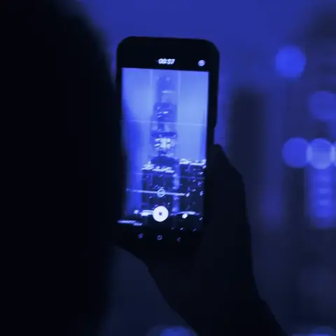
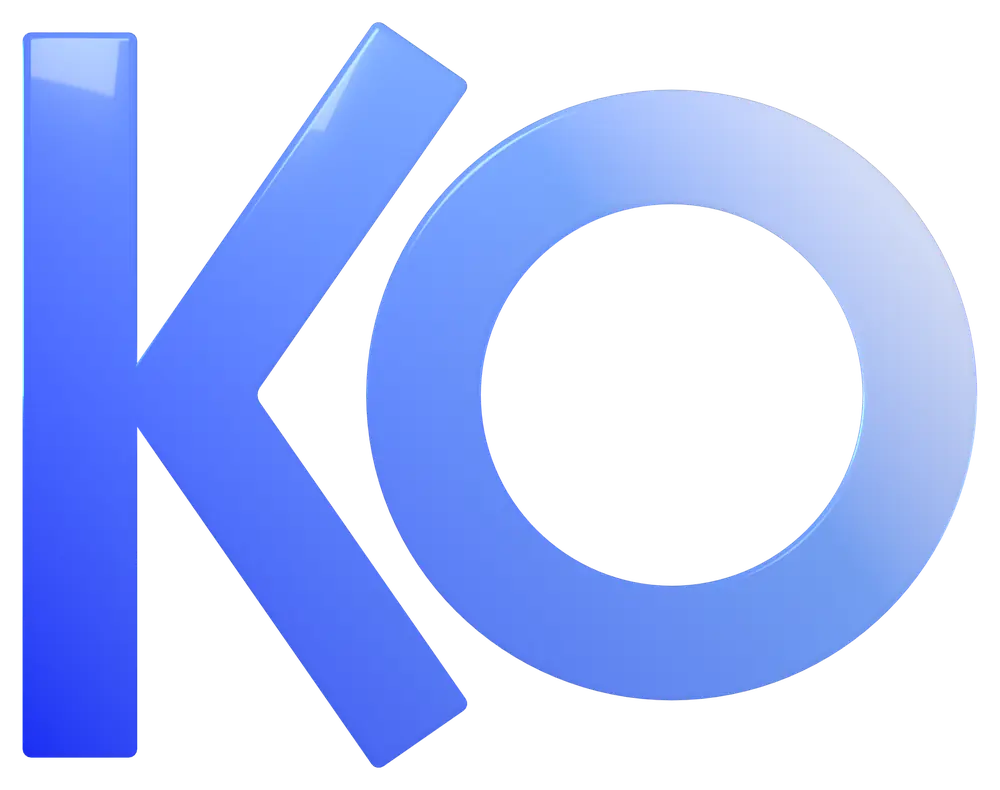
Marketingagentur in Dresden · Wir bringen Marken nach vorn.
Gespräch anfragenWas wir für Sie tun
Strategie, Content und Wachstum für Ihre Marke: geplant, produziert und gemessen.
Was ist KIVORA?
KIVORA ist eine junge Marketingagentur aus Dresden. Wir entwickeln Strategie, produzieren Content wie Reels, Karussells und Stories und messen, was davon wirkt. Für Marken und Unternehmen, die sichtbarer werden wollen.
Strategie
Wir finden heraus, was Ihre Zielgruppe wirklich sehen will, und machen daraus einen Plan.
Content
Reels, Karussells und Stories, die zu Ihrer Marke passen und im Feed auffallen.
Wachstum
Wir messen, was funktioniert, und verbessern jeden Monat nach.
So arbeiten wir
Kennenlernen
Ein Gespräch über Ihre Marke, Ihre Ziele und das, was bisher passiert ist.
Strategie
Wir legen fest, für wen, wo und mit welcher Idee Sie auftreten.
Produktion
Wir planen und produzieren den Content. Sie geben frei, bevor etwas online geht.
Auswerten und verbessern
Jeden Monat schauen wir auf die Zahlen und passen an, was nicht trägt.
Konzepte, die zeigen, wie wir denken
Wir sind neu. Deshalb zeigen wir keine erfundenen Kunden, sondern Konzepte für fiktive Marken.
-
-
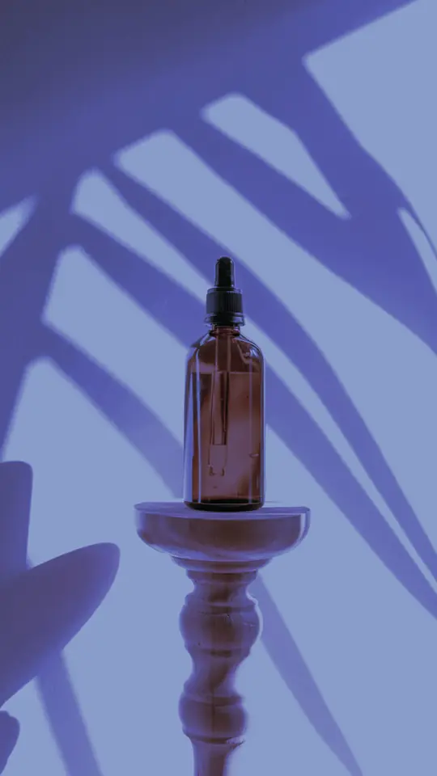
-

-
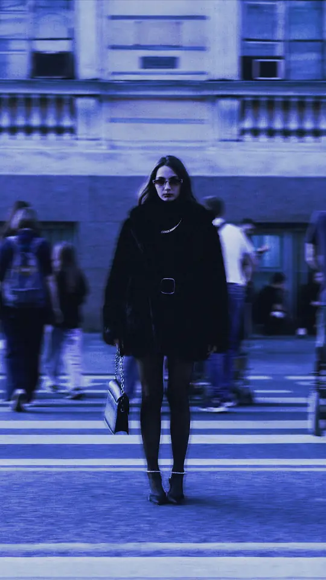
-

-

-
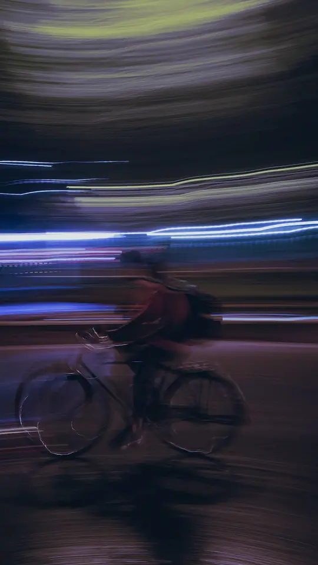
-
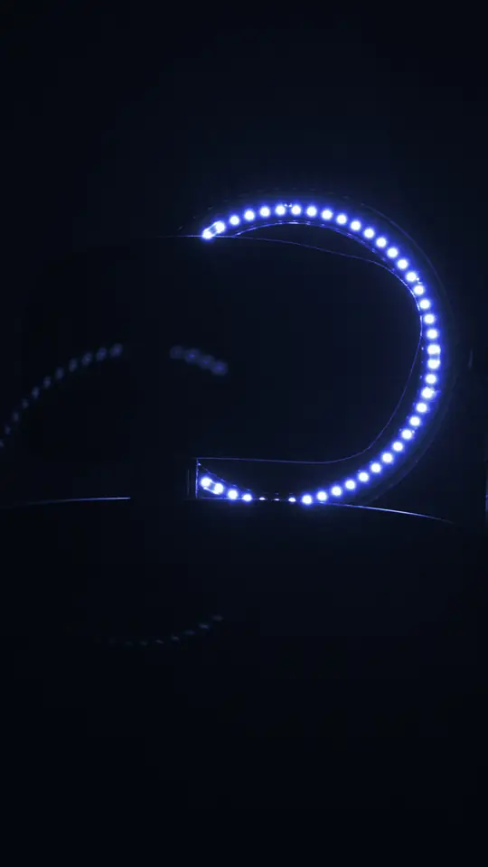
-
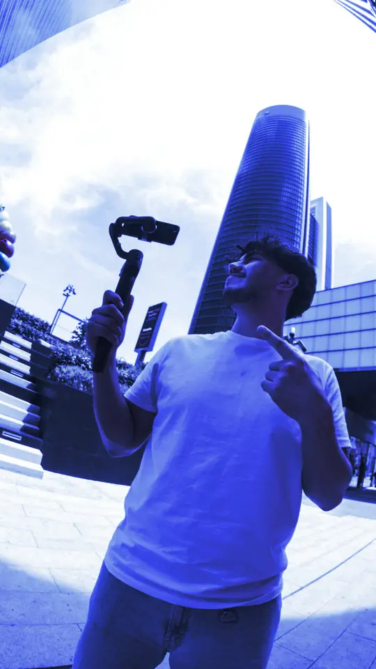
-
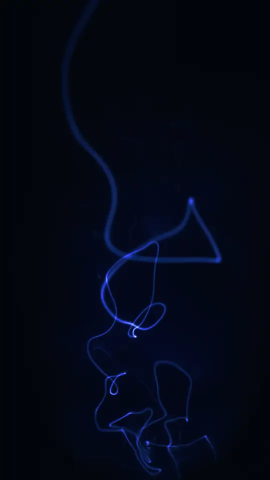
-
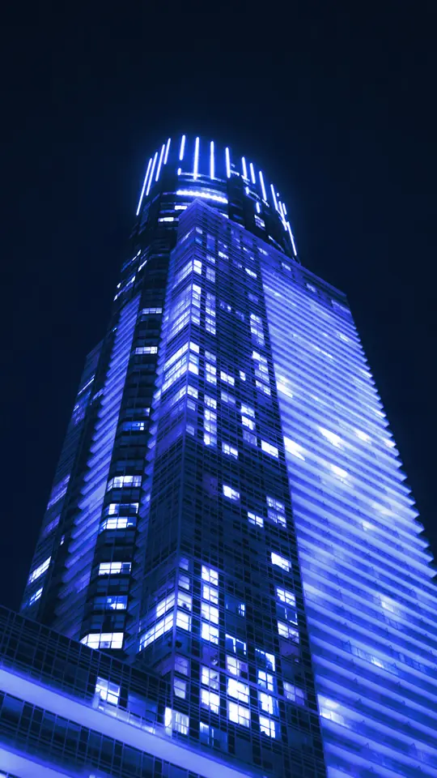
-
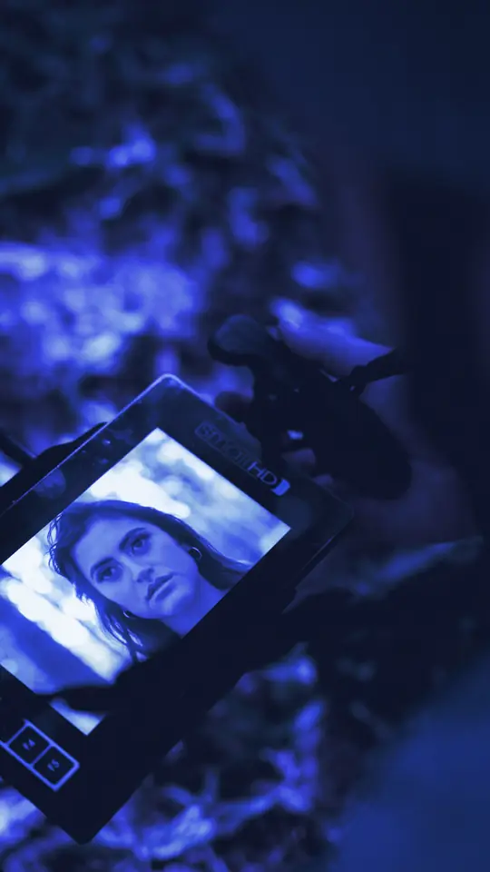
Gründungskunden
Neu heißt: volle Aufmerksamkeit.
Wir sind eine junge Agentur. Unsere ersten Kundinnen und Kunden arbeiten direkt mit den Gründern und gestalten unsere Abläufe mit.
- Sie arbeiten direkt mit den Gründern, ohne Umwege
- Sie prägen mit, wie wir arbeiten
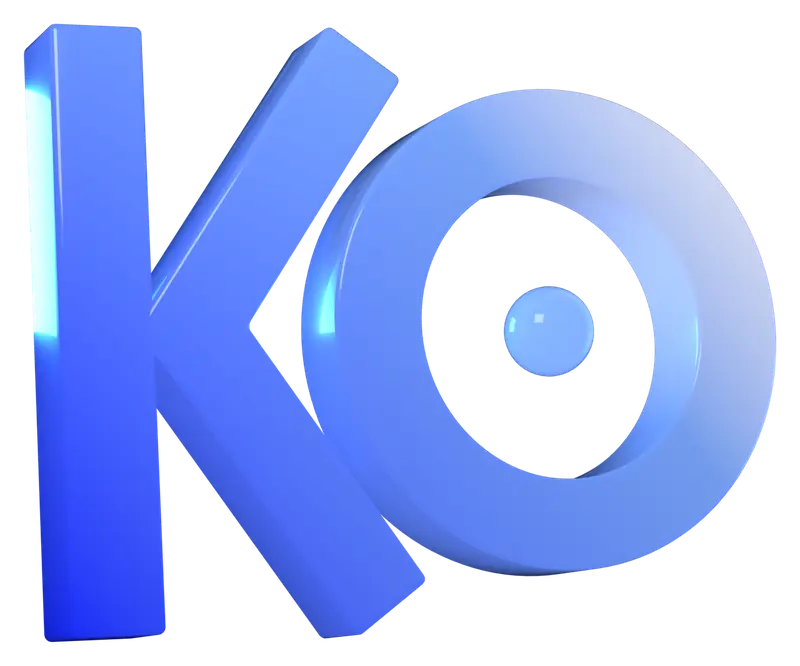
-
Reels
Kurze Videos, die in den ersten Sekunden halten.
-
Karussells
Wissen und Angebote, Bild für Bild erzählt.
-

Stories
Nähe im Alltag, mit Umfragen und Fragen.
-

Markenauftritte
Ein Look, der in jedem Format wiedererkennbar ist.

Häufige Fragen
Für wen arbeiten Sie?
Für Marken und Unternehmen, die mit Content und klarer Strategie sichtbarer werden wollen, vom lokalen Betrieb in Dresden bis zur jungen Marke im Onlinehandel.
Wie läuft der Start ab?
Zuerst ein kostenloses Gespräch. Danach bekommen Sie einen Vorschlag mit Zielen, Formaten und Aufwand. Wenn er passt, legen wir los.
Wie schnell sehen wir Ergebnisse?
Erste Inhalte sind meist nach wenigen Wochen online. Wie schnell Reichweite und Anfragen wachsen, hängt von Markt und Budget ab. Das messen wir jeden Monat, feste Zahlen sagen wir vorher nicht zu.
Was kostet die Zusammenarbeit?
Das hängt vom Umfang ab. Nach dem ersten Gespräch erhalten Sie ein klares Angebot mit festen Leistungen.
Arbeiten Sie auch mit kleinen Unternehmen?
Ja. Gerade für kleine Teams lohnt sich ein klarer Plan, weil jede Stunde zählt.
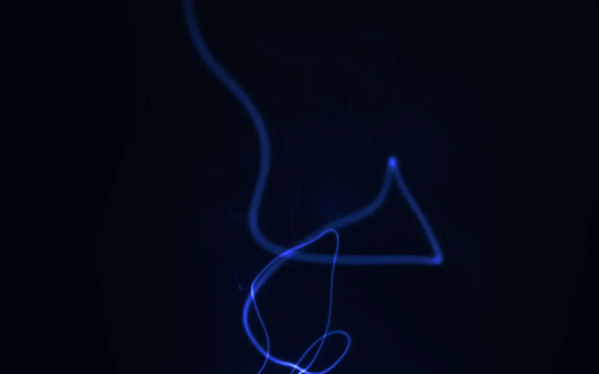
Bereit, nach vorn zu gehen?
Erzählen Sie uns von Ihrer Marke. Wir melden uns innerhalb von zwei Werktagen.
Gespräch anfragen